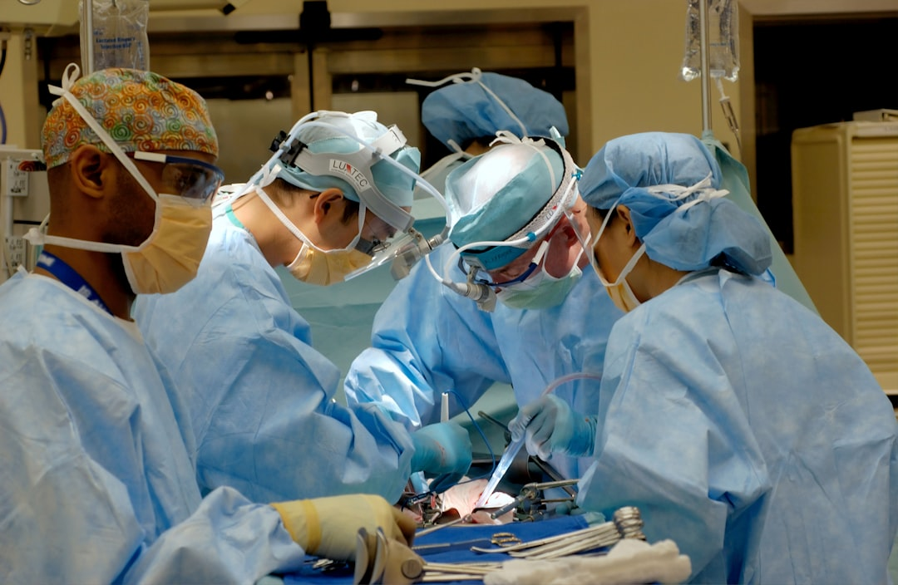
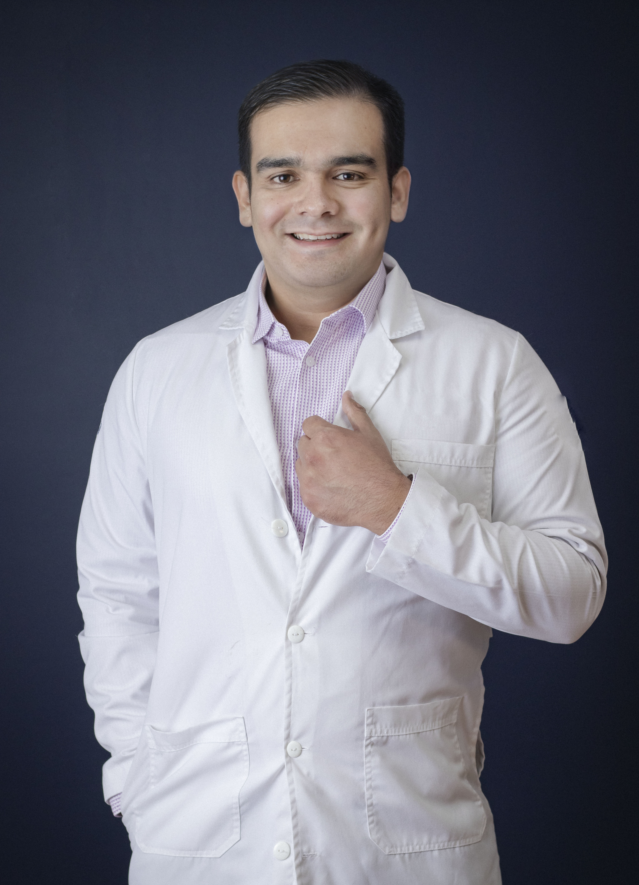

Resultados Reales


Especialista certificado CONACEM #762 con más de 15 años de experiencia
Agendar ConsultaAños de experiencia
Cirugías exitosas
Certificaciones

Con más de 15 años de experiencia transformando vidas a través de la cirugía maxilofacial, mi compromiso es brindar resultados excepcionales con el más alto estándar de calidad y calidez humana.
Especialidad UNAM/IMSS, Maestría y Doctorado en Ciencias Biomédicas UAdeC, Posgrado en Barcelona
Certificado #762 por el Consejo Nacional de Certificación en Especialidades Médicas
Más de 1000 cirugías exitosas realizadas con técnicas de vanguardia
Procedimientos con planificación 3D y técnicas mínimamente invasivas

Procedimientos de vanguardia con tecnología de última generación
Corrección integral de deformidades maxilofaciales para mejorar función masticatoria, respiratoria y estética facial.
Rehabilitación dental completa con implantes de titanio de última generación.
Extracción de bolsas de Bichat para definir el contorno facial.
Extracción especializada de muelas del juicio con técnica atraumática.
Reconstrucción de fracturas faciales con técnicas avanzadas.
Av. Diagonal las Fuentes 550
Torreón, Coahuila
Tel: (871) 386-0450
Av. Francisco I. Madero 451
Gómez Palacio, Durango
Tel: (871) 386-0450